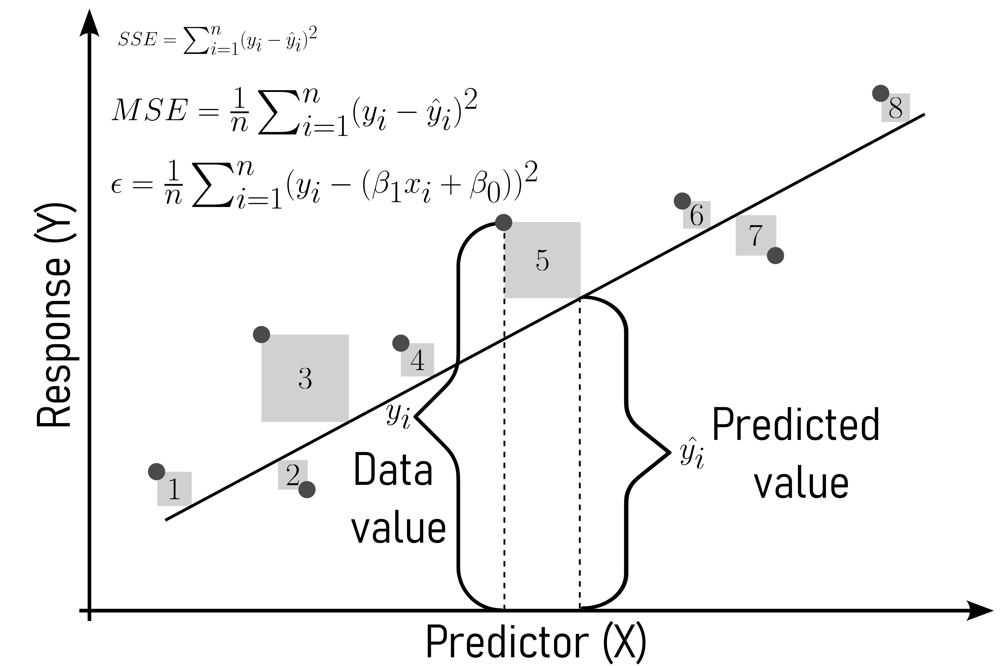
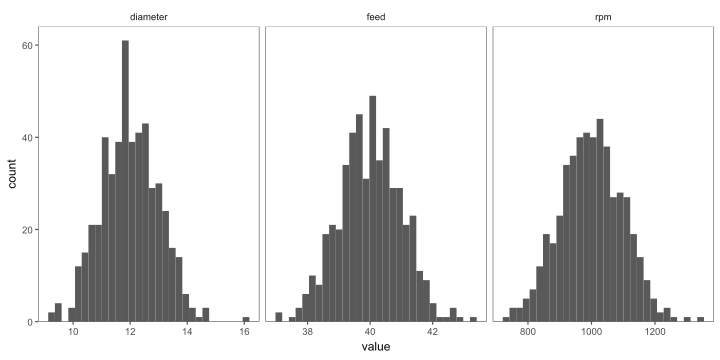

Regression Analysis
Linear Regression
\[\begin{align} y = \beta_0 + \beta_1 \cdot X \label{linreg} \end{align}\]

Figure 1: The basic idea behind linear regression.
Gradient Descent (Ruder 2016)

Figure 3: An example for the gradient descent algorithm
Model Evaluation and Interpretation
\[\begin{align} r^2 = 1- \frac{RSS}{SSE} \label{r2} \end{align}\]

\[\begin{align} r^2_{adjusted} = 1 - (1-r^2)\frac{n-1}{n-k-1} \label{r2adj} \end{align}\]
Call:
lm(formula = diameter ~ rpm, data = drive_shaft_rpm_dia)
Residuals:
Min 1Q Median 3Q Max
-0.89501 -0.19690 -0.01096 0.21917 1.00742
Coefficients:
Estimate Std. Error t value Pr(>|t|)
(Intercept) 2.5000000 0.1406190 17.78 <2e-16 ***
rpm 0.0095000 0.0001399 67.89 <2e-16 ***
---
Signif. codes: 0 '***' 0.001 '**' 0.01 '*' 0.05 '.' 0.1 ' ' 1
Residual standard error: 0.3126 on 498 degrees of freedom
Multiple R-squared: 0.9025, Adjusted R-squared: 0.9023
F-statistic: 4610 on 1 and 498 DF, p-value: < 2.2e-16

Multiple linear regression
Characteristic |
Overall |
A |
B |
C |
p-value |
|---|---|---|---|---|---|
| rpm | 999 (932, 1,068) | 993 (923, 1,061) | 995 (927, 1,074) | 1,012 (946, 1,068) | |
| diameter | 11.95 (11.30, 12.66) | 11.90 (11.24, 12.51) | 11.98 (11.30, 12.67) | 12.01 (11.41, 12.77) | |
| feed | 40.01 (39.34, 40.67) | 39.98 (39.34, 40.63) | 39.91 (39.34, 40.65) | 40.05 (39.37, 40.78) | |
| 1
Median (Q1, Q3) |
|||||

\[\begin{align} Y \sim rpm + feed+ site \label{mlmmodel} \end{align}\]
Characteristic |
Beta |
95% CI 1 |
p-value |
|---|---|---|---|
| rpm | 0.00 | 0.00, 0.01 | <0.001 |
| feed | 0.44 | 0.29, 0.58 | <0.001 |
| site | |||
| A | 0.00 | ||
| B | 0.09 | -0.02, 0.20 | 0.11 |
| C | 0.08 | -0.03, 0.20 | 0.15 |
| 1
CI = Confidence Interval |
|||


Logistic Regression
\[\begin{align} p = \frac{1}{1+e^{-(\beta_0 + \beta_1x)}} \label{sigmoid} \end{align}\]

The ordinary linear regression equation is shown in \(\eqref{linreg}\).
\(y = \beta_0 + \beta_1x\)
If for \(y\) the probabilities \(P\) are used they may be \(>1\) or \(<0\) which is not possible for \(P\).
To overcome this issue, the odds of \(P = \frac{P}{1-P}\) are taken.
\[\begin{align} \frac{P}{1-P} &= \beta_0 + \beta_1x \label{logreg01} \\ \frac{P}{1-P} &\in {0 \ldots + \infty} \nonumber \end{align}\]
Restricted variables are not easy to model why \(\eqref{logreg01}\) is expanded to \(\eqref{logreg02}\).
\[\begin{align} \log\left( \frac{P}{1-P}\right) &= \beta_0 + \beta_1x \label{logreg02} \end{align}\]
\(\beta_0 = 1\) and \(\beta_1 = 1\)

Figure 14: The influence of different paramters for the sigmoid function
\(\beta_0 = 1\) and \(\beta_1 = 0 \ldots 5\)

Figure 15: The influence of different paramters for the sigmoid function
\(\beta_0 = 1\) and \(\beta_1 = -5 \ldots 0\)

Figure 16: The influence of different paramters for the sigmoid function
\(\beta_0 = 0\ldots 5\) and \(\beta_1 = 1\)

Figure 17: The influence of different paramters for the sigmoid function
Maximum Likelihood Estimation (MLE)
In contrast to the cost function for linear regression \(\eqref{mse}\), \(\hat{y_i}\) in logistic regression is a non-linear function \(\eqref{yhatlog}\).
\[\begin{align} \hat{y} = \frac{1}{1+e^{-z}} \label{yhatlog} \end{align}\]
Which is why the Maximum Likelihood Estimator is used.
Using the MLE basically means, to try different models (with different model parameters) that maximize the likelihood of the parameters being true. Because it is easier to look for minima (gradient descent), a loss function is formulated that can be used as a loss function.

Confusion Matrix in practice

Figure 24: Confusion matrices at different probability thresholds
Precision